Getting to know Herbie I decided to do some ground
work Herbie's first day here.
He seems to be sensible
and laid back.
We knew each other a lot
better by the end of our work session.
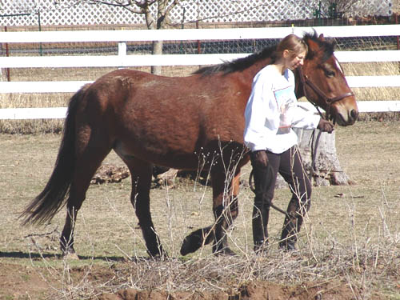
My trainer has a thing about leading
from both sides to keep a horse equally sided. Herbie wasn't sure about
it, but after some persuasion, he decided it would be ok.
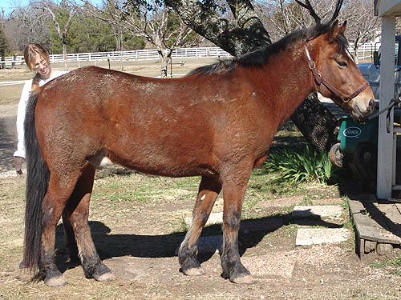
Yes, it rained this morning.
He was extremely still for the grooming.
Very nice.
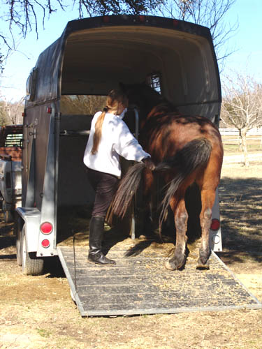
First we did some trailer training.
When he arrived, he had to turn around in the trailer to get out. Now a
tug on the tail and he slowly backs out.
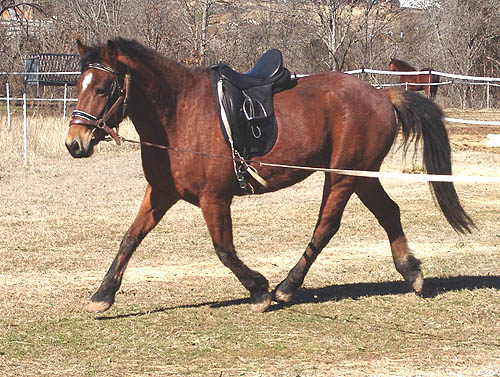
First without sidereins to see how
easily he lunged.
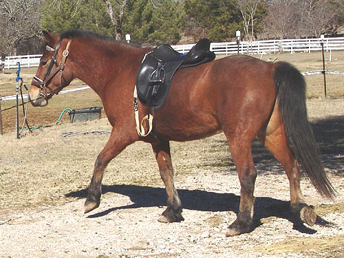
He goes with a much nicer head position
than when he's free in the pasture.
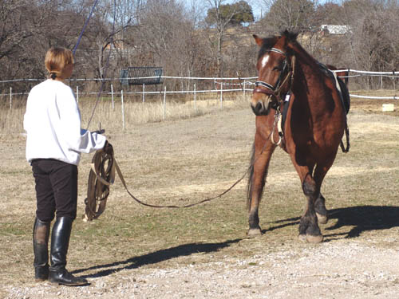
Willing to cross over when he changes
direction.
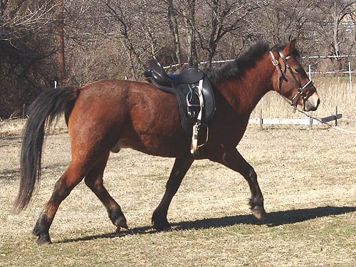
And the other direction.
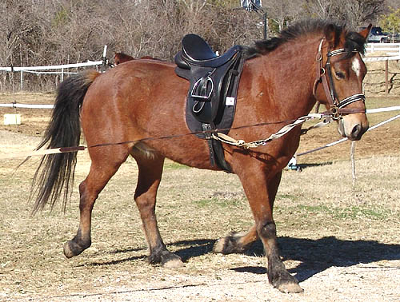
He's got substance, and I'm eager
to see how he feels under saddle.
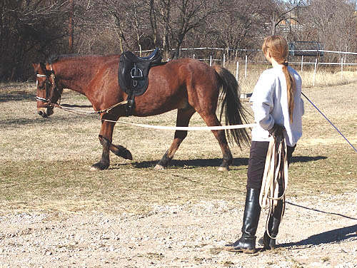
I like it when they finally relax
down at the walk. It's difficult to keep them moving, but also encourage
them to stretch down. With his natural head carriage in the pasture, I
really wanted to see him relax while we were working.
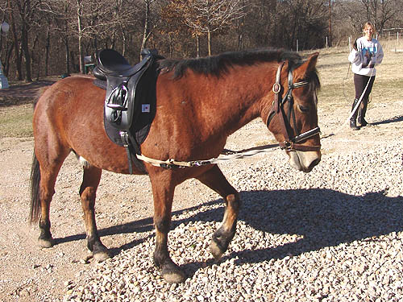
We've had a lot of rain (even a down
pour this morning), so the only dry spot to lunge was in the driveway.
He's got tough feet, the gravel didn't bother him at all...
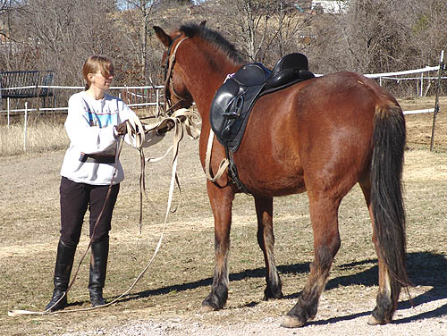
I guess he met the electric tape yesterday.
Today he was very cautious coming through the gate, and he wasn't sure
if he could trust the white lunge line.
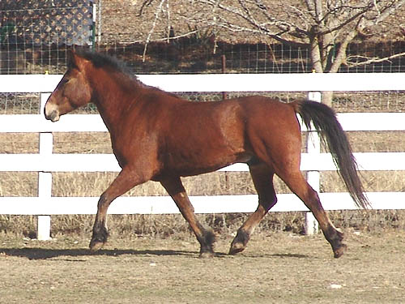
Out in the pasture he braces his neck
up at the trot.